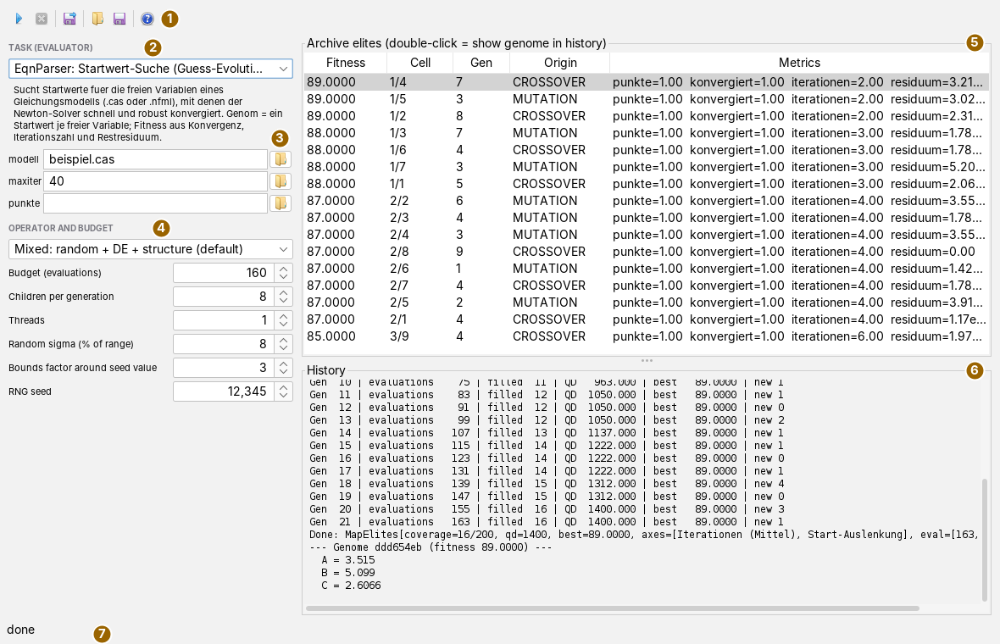
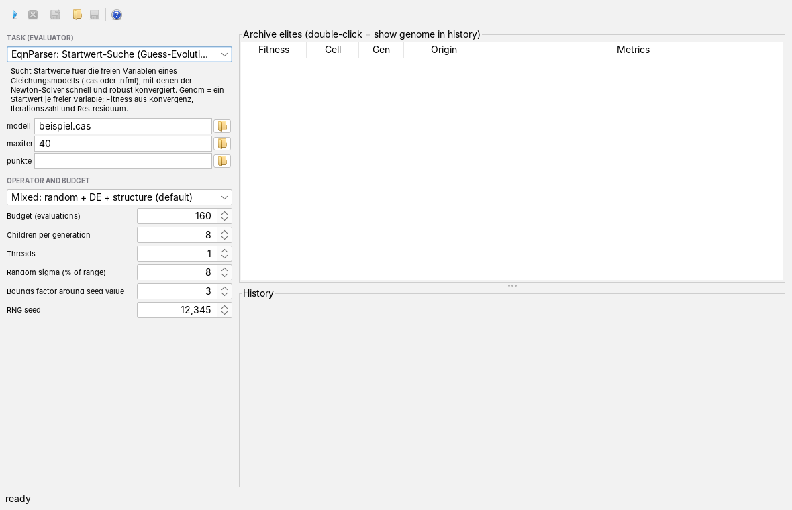
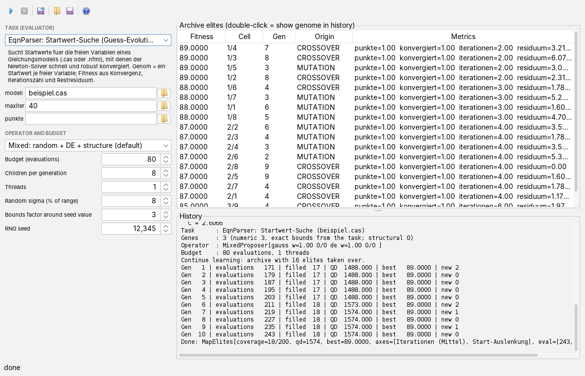

Using the learning workbench
User page, as of 7 October 2026. How to choose a task, set the search method and budget, run a search, read the archive, continue learning on an archive and hand out the best result as a preset file. The pictures are screenshots of the app during a real, small search: the bundled starting-value search of the equation solver looks for starting values for an invented model of three equations in three unknowns A, B and C that has two solutions.
The window
Open the app from the Apps menu with Open the learning workbench… or with Alt+G. The toolbar is at the top, the settings on the left, the archive on the right with the history below it.

The left column is 340 pixels wide and scrolls if the window is too low. The divider between archive and history can be moved.
MAP-Elites and the archive in brief
An ordinary search keeps one winner at the end. The workbench searches with the MAP-Elites method and keeps many: the task names two or more features of a solution, its axes, and divides each into equally wide sections. This gives a grid of cells. Every evaluated candidate falls into exactly one cell according to its features; values outside the range count towards the edge cell. If the cell is empty or the candidate is better than its current occupant, it becomes the new occupant; otherwise it is discarded. The occupant of a cell is called an elite, the collection of all elites the archive. Invalid evaluations, such as a run that did not converge, never get in.
New candidates come from elites: for each generation the workbench draws two parents, each with 35 % probability from the best quarter of the archive and otherwise uniformly from all elites, and the chosen operator turns them into the children of the generation; it also sees the six best elites. Because elites from remote cells become parents too, the search stays broad. In the end you have not just the best solution but, for every corner of the feature space, the best one found.
In the example of the pictures the features of the starting-value search are the mean number of solver iterations (0 to 40 in 20 sections) and the deflection of the starting values from the middle of their range (0 to 1 in 10 sections); the grid thus has 200 cells. Cell 1/4 means: second section of the first axis (2 to under 4 iterations), fifth of the second (deflection 0.4 to under 0.5); counting starts at 0.
The toolbar
The buttons carry icons only; what they do is in the tooltip. Whatever is not possible at the moment is disabled: cancel only during a run, saving genome and archive only after a run with a result.
| Icon | Tooltip | What happens |
|---|---|---|
 | Start search | Starts the search with the settings on the left (see Running a search). Disabled during a run. |
 | Cancel search (after the current generation) | The generation being evaluated finishes, then the search stops. Archive and table remain; the status line says cancelled. |
| Save genome… — selected table row, otherwise the best, as a preset file | Writes the genome as a preset file (see Handing out the result). | |
 | Load archive… — Load a saved archive – the next start builds on it (must match the selected evaluator; changing provider discards it) | Reads a saved archive; the next start builds on it (see Continuing to learn). |
 | Save archive… — Save the MAP-Elites archive of the last run as a directory (axes.properties + one elite-*.properties per elite) | Writes the archive of the last run into a directory. |
 | Help: opens the docs for this app (like F1) | Opens this page in the docs app. Without a docs app in the launcher nothing happens. |
The settings
| Field | Meaning |
|---|---|
| Task (evaluator) | What is searched for. The list shows all tasks offered by other apps in the launcher, sorted by name; below it is the description of the selected task. Bundled are the starting-value search of the equation solver (from the EqnParser app) and the search for settings for tracing curves (from the Image Digitizer). If the app finds no task, Start search is disabled and the history says how tasks are registered. |
| Inputs | One row per input of the task: name, text field and file chooser. The tooltip of the name and of the field explains what is required. The starting-value search asks for modell (model file .cas or .nfml), maxiter (iterations per evaluation, empty means 100) and optionally punkte (operating points as CSV; then how many points converge counts first). A relative path is taken from the program's start directory. |
| Operator | How children are made from parents, see Operators. Default: Mixed. |
| Budget (evaluations) | How many candidates this run may evaluate, 10 to 100,000, default 200. It is checked before each generation; the last one runs to completion, so the run may end up to one generation minus one above it. The evaluation of the starting values and the elites of a taken-over archive do not count. |
| Children per generation | How many candidates are proposed and evaluated together per generation, 1 to 64, default 8. |
| Threads | How many evaluations run at the same time, 1 to 64, default: number of processor cores minus one. More than Children per generation gains nothing. |
| Random sigma (% of range) | Step size of the random mutation as a percentage of a gene's range, 0.5 to 50, default 8; at most three genes are changed per child. For CMA-ES it is the initial step size, relative to the mean range of all genes. |
| Bounds factor around seed value | Only if the task supplies no bounds of its own for the genes: a gene with starting value v is searched between v/factor and v·factor, a starting value 0 between −1 and 1. 1.1 to 20, default 3. The starting-value search supplies its own bounds (from the bounds of the variables in the model, otherwise a span around the default value); then the field has no effect, and the history says exact bounds from the task. |
| RNG seed | Starting value of the random generator, default 12345. The same task, inputs and settings give the same run; the German and English pictures on this page therefore show the same elites and values. |
Operators
| Operator | What it does |
|---|---|
| Mixed: random + DE + structure (default) | Chooses randomly per child between random mutation and differential evolution, at first with equal weight; if the task has non-numeric genes (enumerations, booleans), a structural mutation is added at half weight. The weights slowly follow the hit rate: an operator whose children get into the archive more often is drawn more often. The random share fills the archive at the start until differential evolution has enough elites. |
| Random mutation (Gaussian) | Changes up to three genes of a parent by normally distributed steps of size Random sigma. |
| Differential evolution (rand/1) | Takes the parents and the six best elites as the population, draws a target and three further distinct members a, b, c, forms a + 0.7 · (b − c) and replaces each gene of the target with probability 0.9 by the corresponding one of this trial vector, at least one. The step size thus comes from the spread of the archive itself. Needs at least four distinct members, otherwise it proposes nothing; the children carry the origin CROSSOVER. |
| Differential evolution (best/1) | Like rand/1, but with the best elite as a; searches more closely around the best so far. |
| CMA-ES (covariance, tell-driven) | Learns from the evaluations a distribution that adapts to the shape of the fitness landscape and draws the children from it; starts at the task's starting value. |
| Surrogate model (kernel regression, tell-driven) | Estimates the fitness from all previous evaluations as a distance-weighted mean and proposes where estimate and uncertainty (distance to the nearest evaluated point) together are highest. Worthwhile for expensive evaluations. |
Pure differential evolution with only one starting value proposes nothing because it lacks the four members. After 1000 generations without a proposal the run ends, and the status line says ended early (no proposals). Remedy: first fill an archive with Mixed or the random mutation and then continue learning.
Running a search

- Choose the task. The input rows follow it.
- Fill in the inputs, by hand or with the folder icon next to them.
- Set operator and budget. Mixed is enough to start with; the budget depends on how long one evaluation takes (a few milliseconds in the example, about 2.5 seconds when tracing curves).
- Press Start search. The workbench creates the task, evaluates the task's starting values first and then generation after generation. If creating the task already fails, for example because a file is missing, the reason is in the history and in the status line.
- Watch: after each generation a line is added to the history and the table is refilled. The interface remains usable.
At the start the history states what is searched with:
| Line | Content |
|---|---|
| Task | name of the task as it calls itself |
| Genes | number of genes, how many are numeric, where the bounds come from, and how many are non-numeric (structural) |
| Operator | the operator with its internal settings |
| Budget | evaluations and threads |
Then one line per generation:
| Column | Meaning |
|---|---|
| Gen | number of the generation in this run |
| evaluations | all evaluations the archive has seen so far, including the starting values and, when continuing to learn, the earlier runs |
| filled | number of cells holding an elite |
| QD | sum of the fitness of all elites. It grows with quality and with the number of filled cells; meaningful only as long as the fitness is not negative. |
| best | best fitness in the archive |
| new | candidates taken into the archive in this generation |
At the end comes Done with a summary of the archive: filled and possible cells, QD, best fitness, axes and the counters insertion attempts, improvements, rejections.
Reading the archive
The table Archive elites has one row per filled cell, the best at the top.
| Column | Meaning |
|---|---|
| Fitness | quality according to the task, larger is better. In the starting-value search every converged operating point counts maxiter + 10, plus the iterations saved and a share for a small final residual. In the example: 1 · 50 + (40 − 2) + almost 1 ≈ 89. |
| Cell | section per axis, counted from 0, separated by / |
| Gen | generation in which the elite was created |
| Origin | SEED (starting value of the task), MUTATION (changed from one parent), CROSSOVER (put together from two parents) or REPAIR (brought back into the valid range afterwards; no bundled operator sets it) |
| Metrics | the first four figures the task supplies with its evaluation; further ones are indicated by “…”. In the starting-value search: number of points, of which converged, mean iterations, largest final residual. |
A double-click on a row writes its genome into the history: identifier, fitness and one line name = value per gene. In the picture these are the starting values A, B and C with which the solver converges in two iterations. The cells below show how well things go with starting values further from the middle of their range: the archive also shows how robustly a task reacts to other starting values, not just the winner.
Continuing to learn

After each run the workbench remembers the archive, and the next start builds on it: the history reports Continue learning: archive with … elites taken over, the starting values are not evaluated again, and the budget applies to the new evaluations. If you change the task or an input, the remembered archive is discarded and the history says so; the next run starts empty.
The saved archive carries across sessions. Save archive… asks for a directory (it is created or replaced) and writes into it axes.properties with the axes and one file per elite, elite-0000.properties, elite-0001.properties and so on: the genome and, under keys with an underscore, fitness, features, figures, generation and origin. Load archive… reads such a directory; if axes.properties is missing, the app reports that it is not an archive. Whether a loaded archive matches the selected task it does not check; the archive should therefore have been made with the same task and the same inputs. Choose the task first, then load: changing the task later discards the loaded archive.
Handing out the result
Save genome… writes the genome of the selected table row or, if none is selected, of the best elite into a text file, suggested as bestes-genom.properties. At the top, as comments, stand the origin (learning app and task), fitness and generation, below that one line name=value per gene. The file has the genome format of the search framework and can be loaded wherever an app accepts such presets, for example in the tracing stage of the Image Digitizer. Every elite file of a saved archive is such a preset as well.
What is saved
When the workspace is saved, the app remembers the selected task, the operator, the budget and the inputs and restores them the next time it opens. A value that cannot be read or no longer fits is skipped; the rest still arrives. Not remembered are children per generation, threads, random sigma, bounds factor and RNG seed, nor the archive; you keep the archive with Save archive…. If the app is closed while a search is running, it asks and cancels the search.
Keyboard and mouse
Alt+G opens the app, F1 this page. A double-click on a table row shows its genome in the history; a single click selects the row for Save genome…. The divider between table and history can be moved with the mouse. The app has no other shortcuts.
Limits
- Only one search runs at a time; cancelling takes effect only after the current generation, so with slow tasks it is delayed.
- The history is text; a chart of the fitness over time and a view of the grid are still missing.
- Names, descriptions, inputs, axes and figures come from the task itself. The two bundled tasks have them in German only; they therefore appear in German in the English interface.
- If the workbench derives the bounds from the starting value, only genes with a number as starting value are searched; enumerations and booleans are changed only by the structural mutation in Mixed.
- Evaluations run in parallel; a task must tolerate that. The bundled ones do.
What the app can do and what it builds on is described in the overview; the search method itself is described by framework-evolve.
Icons: Fugue Icons by Yusuke Kamiyamane, licence CC BY 3.0.